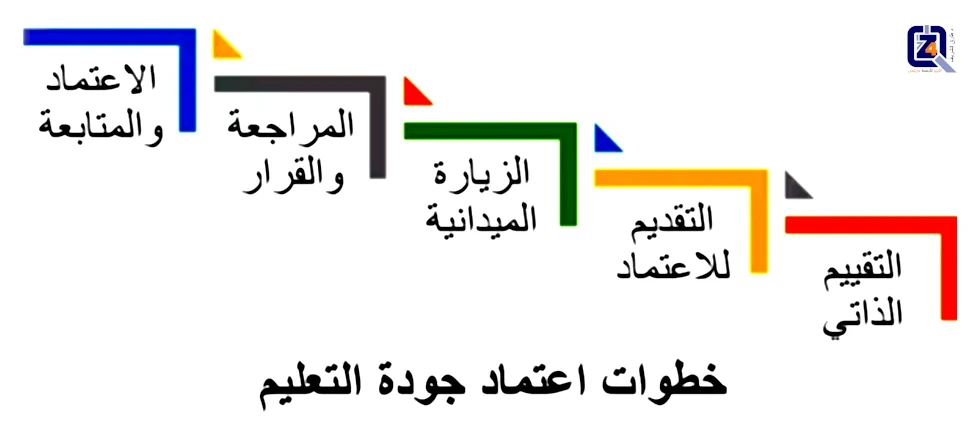

مرحبًا بكم في
موسوعة فور زد لاستشارات الجودة. كثير من الدول تعتبر التعليم أحد مقومات أمنها القومي. فالتعليم هو من سيفرخ قادة المجتمع، وعلمائه، وحماته، ومدرسيه، وأطبائه، ومهندسيه، إلخ. لذلك، دعونا نعرف المزيد عن اعتماد جودة المؤسسات التعليمية، التي تضمن جودة التعليم لكل فرد من أفراد المجتمع.
ما المقصود بعملية اعتماد جودة التعليم؟
- اعتماد جودة التعليم هي عملية التقييم والتحقق من جودة خدمات وعمليات أي مؤسسة تعليمية، أو برنامج أكاديمي. من قبل هيئة اعتماد معترف بها. وذلك من أجل تحديد ما إذا كانت معايير جودة التعليم قد تم الوفاء بها. وإذا تم استيفاء المعايير، يتم منح الاعتماد.
- لكي يتم اعتمادها، يجب على المدارس، المعاهد أو الجامعات إجراء عملية تقييم ذاتي مكثف. يتطلب منها ذلك اجتياز مؤشرات الجودة بنجاح مثل: إدارة بيانات المؤسسة التعليمية بدقة، تصميم مناهج ومقررات ذات محتوى جيد، إجراء تقييمات دورية لتقييم أداء الطلاب وتحسينه، توفير مرافق عالية المستوى، إتاحة الوسائل التعليمية اللازمة، إلخ.
- في معظم بلدان العالم يتم اعتماد جودة التعليم من قبل هيئات حكومية، تتبع عادة وزارات التعليم.
- في الولايات المتحدة، تفوض الحكومة بدلاً من ذلك منظمات خاصة، غير ربحية لإجراء الاعتماد. لكن يجب أن يتم أولًا الاعتراف بتلك المنظمات من قبل اللجنة الاستشارية الوطنية للجودة المؤسسية والنزاهة، وهي هيئة تابعة لوزارة التعليم الأمريكية. هذا يعني أنه حتى بالولايات المتحدة، يكون الاعتماد أيضًا، لكن بشكل غير مباشر من قبل الحكومة.
”الجودة لا تأتي اعتباطًا؛ بل هي مجهود منظم، وتخطيط مدروس، والتزام دائم بالتحسين المستمر. وذلك ما تعيه شركة فور زد للجودة جيدًا، وهذا هو جوهر ما تقدمه لعملائها الكرام.“
أهداف اعتماد جودة التعليم:
- الجودة الأكاديمية: تم تصميم معايير جودة التعليم لتحسين الجودة الأكاديمية بالمدارس، والمعاهد والجامعات. وتشدد المعايير على مدى تحصيل الطلاب، والتوقعات العالية المرجوة من التدريس، والتعلم، والبحوث، والخدمة العامة، والتوعية.
- المساءلة: تتمتع المؤسسات التعليمية التي تسعى للاعتماد، بمعايير مساءلة متسقة وواضحة، يتم إعلانها للعامة والمجتمع. وتكون نتائج المخرجات التعليمية متاحة للجميع، ويمكن استخدامها في التخطيط لتغيير وتطوير البرامج الأكاديمية.
- التخطيط والتحسين: يتم تشجيع المؤسسات التعليمية المعتمدة، إذا تطلب الأمر، على التخطيط لتطوير وتحسين بيئة التعلم. وتحرص المؤسسات التعليمية وبطريقة منهجية على التخطيط كي تنفذ التغيير في الوقت المناسب. مع التشديد أولًا وأخيرًا على إنجازات الطلاب.
من المستفيد من اعتماد جودة التعليم؟
- عامة الناس: يمكن طمأنة عامة الناس إلى أن البرامج المعتمدة يتم تقييمها ومراجعتها على نطاق واسع، وتتوافق مع توقعاته.
- الطلاب: يمكن للطلاب تحديد واختيار البرامج التي تلبي معايير جودة التعليم.
- المؤسسات التعليمية: تستفيد المؤسسات التعليمية من عمليات التقييم الذاتي وتحسين البرامج التي تقوم بها أثناء عملية اعتماد جودة التعليم. وتكتسب بذلك المزيد من المصداقية.
- المهن المختلفة: أي مهنة في المجتمع تستفيد من تطبيق المعايير الموضوعة لتعليم مهنيين المستقبل.
ما هي فوائد اعتماد جودة التعليم؟
- الاعتماد يحدد ما إذا كانت المؤسسة التعليمية تفي بمعايير التعليم الجيد، وتوفر بذلك اعترافًا رسميًا من قبل المجتمع.
- الاعتماد يحسن من معدل التسجيل والالتحاق بالمؤسسة التعليمية، من خلال كسب ثقة الطلاب وأولياء الأمور.
- الاعتماد يشجع التخطيط الاستراتيجي، ويحدد مجالات التحسين، ويوفر معلومات جوهرية يمكن استخدامها لدعم قرارات المؤسسة التعليمية فيما يخص الموارد البشرية أو المالية.
- الاعتماد مهم للغاية في توظيف العاملين المتميزين، وقبول الطلاب المتفوقين.
- الاعتماد يساهم في التأكد من أن خريجي هذه البرامج، لديهم الإعداد المناسب الذي يلبي المعايير والجودة المقبولة وطنياً.
- الاعتماد يعزز مصداقية البرنامج الأكاديمي ومستوى المعرفة للطلاب.
- الاعتماد يساعد البرامج التقليدية القديمة على التعامل مع تغيرات العالم الأكاديمي سريع التطور.
- توفر إجراءات الاعتماد، خاصة ما يتعلق بالتقييم الذاتي والزيارة الميدانية، فرصًا لمساعدة أعضاء هيئة التدريس وموظفي ومديري المؤسسات التعليمية على فهم البرامج التي تقدم بشكل أفضل.
- الاعتماد يساعد على ضمان أن تكون المؤسسة التعليمية رائدة في مجال التعليم.
- الاعتماد يشجع على التحسين الذاتي للمؤسسات التعليمية وتحسين البرامج الأكاديمية.
- الاعتماد يمكن أن يكون عاملاً قوياً للغاية في مناقشات الإبقاء على برنامج أكاديمي من عدمه.
- الاعتماد يوفر ميزة تنافسية للبرامج الأكاديمية والطلاب والمهن المختلفة.
- الاعتماد قد يؤثر على مقدار الدعم الحكومي الذي تتلقاه المؤسسة التعليمية في بعض الدول.
خطوات اعتماد جودة التعليم:

- التقييم الذاتي: يجب على المؤسسة التعليمية التي تسعى للحصول على الاعتماد، إجراء تقييم ذاتي لعملياتها التشغيلية وفقًا للمعايير المحلية أو الدولية ذات الصلة. ويمكن القيام بذلك بنفسها أو بمساعدة مكتب استشارات خارجية للجودة، كشركة فور زد للجودة.
- تقديم طلب الاعتماد: تتقدم المؤسسة التعليمية بطلب الاعتماد، وتوقع اتفاقية مع جهة الاعتماد.
- التحقق من أهلية المؤسسة التعليمية للاعتماد: تقوم هيئة الاعتماد بفحص الوثائق المرسلة من قبل المؤسسة التعليمية (إثبات الامتثال لمعايير جودة التعليم التي وضعتها هيئة الاعتماد). يتم إرسال تقرير المراجعة والتدقيق إلى المؤسسة التعليمية.
- الزيارة الميدانية: تقوم هيئة الاعتماد بتعيين المراجعين (يختلف عدد المراجعين حسب حجم المؤسسة التعليمية وعدد البرامج الأكاديمية). ثم يتم وضع جدول الزيارة بالتنسيق مع المؤسسة التعليمية. يتم تنفيذ زيارة المؤسسة، وخلالها يتم إجراء مقابلات مع الطلاب والموظفين، وفحص المرافق والمعدات، ومراجعة المستندات.
- تقرير المراجعة والتدقيق: بعد زيارة المؤسسة، يقدم المراجعون مسودة تقرير مبدئي، والذي يراجع من قبل استشاريين بهيئة الاعتماد. بعد ذلك، يتم إرسال نسخة منه مع توصيات التحسين، إن وجدت، إلى المؤسسة التعليمية.
- قرار الاعتماد: يتم إعداد التقرير النهائي للتوصية بالاعتماد. وفي حال استيفاء المؤسسة التعليمية للمتطلبات، يتم الإعلان عن نيل المؤسسة التعليمية للاعتماد.
- المتابعة الدورية للمؤسسات التعليمية المعتمدة: تعد المؤسسة التعليمية تقريرًا سنويًا عن وضعها، وعن الجهود المبذولة لتنفيذ أي توصيات صادرة عن جهة الاعتماد. بعد ذلك، تقوم هيئة الاعتماد بفحص هذا التقرير، والقيام بزيارة ميدانية للمؤسسة التعليمية (إذا لزم الأمر)، وإصدار تقرير متابعة وإرساله إلى المؤسسة التعليمية. هذا الإجراء يضمن استمرار المؤسسة التعليمية في الالتزام بمعايير جودة التعليم، حتى بعد الحصول على الاعتماد.
إذا تمكن هذا الشرح المبسط لمراحل اعتماد جودة التعليم من زيادة فضولكم لمعرفة المزيد عن جودة التعليم والمعايير المطلوبة، أو أثار هذا العرض المختصر اهتمام مؤسستكم لنيل الاعتماد،
يمكنكم التواصل معنا، بإرسال بريدًا إلكترونيًا على العنوان التالي: support@the4z.com. يسعدنا الرد على جميع أسئلتكم حول جودة التعليم، وإعطائكم أفضل دعم متوافر بمنطقة الشرق الأوسط في مجال اعتماد جودة التعليم..
اتصل اليوم بشركة فور زد للجودة على رقم (أيضًا واتساب):
0097333995807 أو 00905050304016.